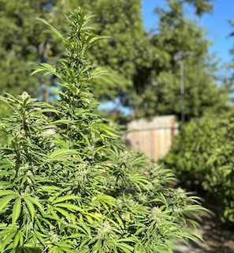
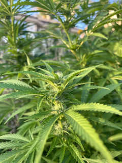
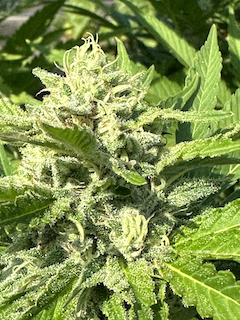
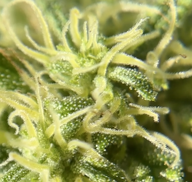
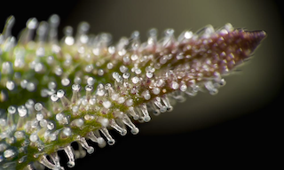
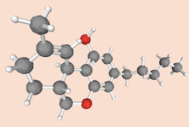

Please click the gray dots to peruse images of marijuana (cannabis) plants from various angles and magnifications. The final image is of tetrahydrocannabinol (THC), the active ingredient that is made within cannabis flowers.
1 / 6

Marijuana plant in an outdoor garden
2 / 6

Close up of marijuana flowers on plant
3 / 6

Close up of cannabis flower before harvest
4 / 6

Cannabis flower under microscope
5 / 6

Trichomes on cannabis flower under magnification (photo: hightimes.com)
6 / 6

Chemical structure of THC, drawn in ModelAR app